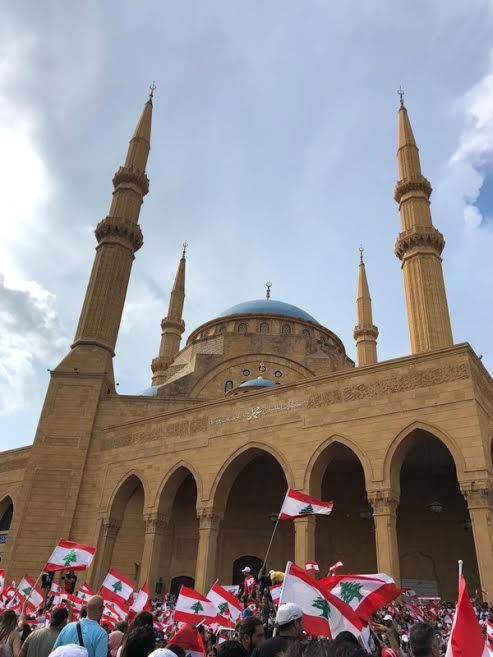
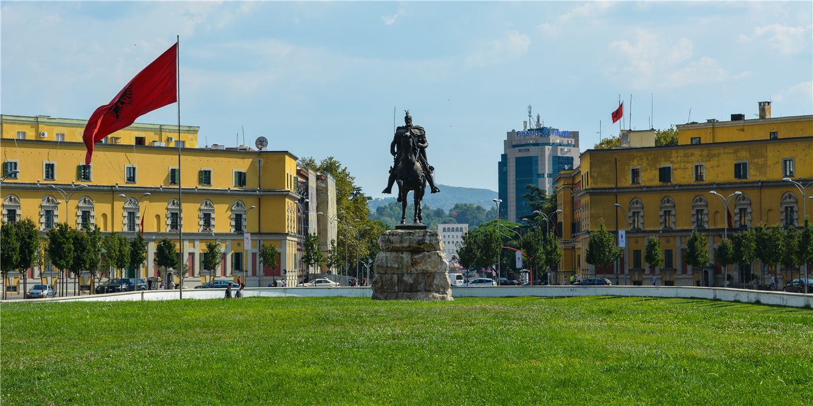
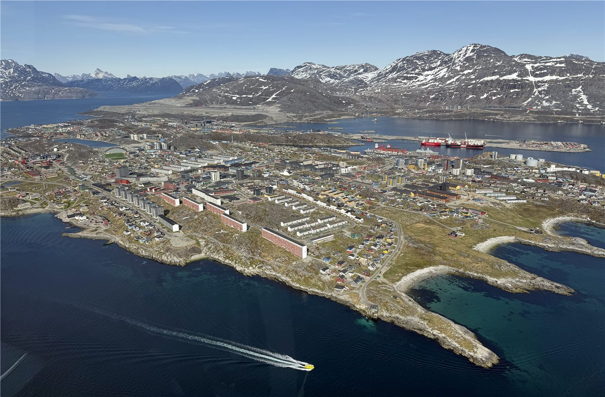
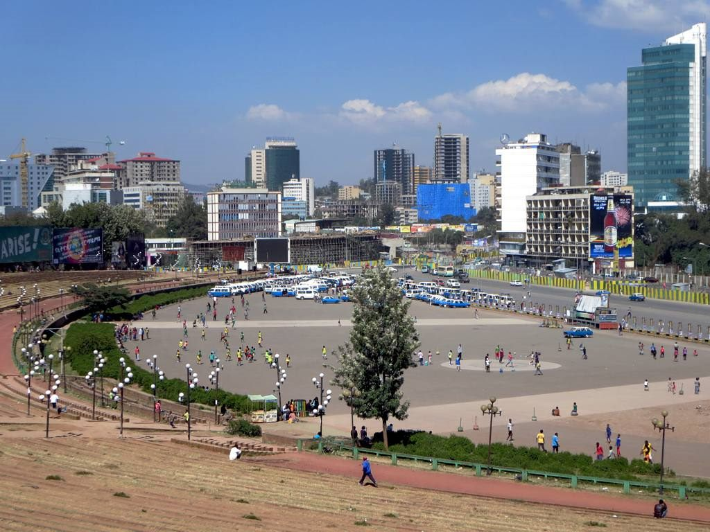

橋미국
미국트럼프 행정부 동향… 정보수장 교체·법무 정책에 시선
백악관이 국가정보국장 대행을 새로 지명하고, 법무부는 일부 정책 방향을 정리했다. 대외·통상 변수도 화인 경제에 파급.
백악관이 국가정보국장 대행을 새로 지명하고, 법무부는 일부 정책 방향을 정리했다. 대외·통상 변수도 화인 경제에 파급.

EU 지도자들이 우크라이나 지원, 2028~2034 예산, 방위·이민을 의제로 올렸다. 올해 회원국 8곳이 총선을 치른다.
7일간 본토·카나리아 제도 순방.

그레이트니코바르 섬 항만·공항·신도시 계획.

스위스 유권자들이 14일 국민투표에서 인구를 2050년까지 1천만 명으로 묶자는 우파 발의를 약 55% 반대로 부결시켰다. EU와의 자유로운 이동을 지키려는 도시 표심이 농촌의 반이민 정서를 눌렀다. 유럽 전역의 이민 논쟁에 시사점을 던진다.

다카이치 일본 총리가 런던에서 스타머 영국 총리와 만나 영·일·이탈리아 공동 차세대 전투기(GCAP) 개발 가속과 에너지·경제안보 협력 강화에 합의했다. 180억 파운드 규모 투자도 함께 발표됐다.

6월 14일 이스라엘군이 헤즈볼라 표적을 겨냥해 베이루트 남부 다히예 지역을 공습, 최소 3명이 숨지고 7명이 다쳤다. 가까스로 모색되던 지역 평화 협상에 그늘이 드리워졌다.
트럼프 대통령이 6월 14일 백악관 남쪽 잔디밭에 임시 격투 경기장을 세우고 UFC 경기를 개최했다. 국기의 날이자 자신의 80세 생일, 그리고 미국 건국 250주년 행사가 겹친 이례적 이벤트다.

워싱턴 케네디센터에서 트럼프 대통령의 이름이 제거됐다. 법원은 '의회가 붙인 이름은 의회만 바꿀 수 있다'며 제거를 명령했고, 6월 13~14일 마감을 앞두고 일부 작업이 진행됐다.

국제유가가 6월 15일 배럴당 약 81달러로 4% 넘게 떨어졌다. 중동 긴장 완화와 호르무즈 해협 정상화 기대가 반영됐다. 4월 말 118달러를 넘었던 유가가 빠르게 식고 있다.
중동발 에너지 가격 급등이 세계 주요 중앙은행을 곤혹스럽게 했다. 물가가 다시 오르는 가운데 성장은 둔화돼, 금리 인하와 인상의 갈림길에서 셈법이 복잡해졌다.

11월 3일 미국 중간선거를 앞두고 6월 14일 일요 정치 토론 프로그램에서 양당 인사들이 본격 공방을 벌였다. 하원 전 의석과 상원 35석이 걸려 있어 의회 주도권 향방에 관심이 쏠린다.

트럼프 대통령의 사위 재러드 쿠슈너와 연계된 대형 해안 개발 사업을 두고 알바니아에서 시위가 이어지고 있다. 자연보호구역 개발과 부패 우려가 겹치며 반정부 집회로 번지는 양상이다.

EU와 미국의 무역협정이 6월 중순 스트라스부르 유럽의회 본회의에서 최종 표결을 앞두고 있다. 미국산 관세 15% 수용과 EU 측 관세 철폐가 핵심이며, 미국의 신뢰성 논란이 변수로 남아 있다.

덴마크의 메테 프레데릭센 총리가 중도좌파 소수정부를 구성하며 세 번째 임기에 들어섰다. 새 내각은 그린란드의 미래를 둘러싼 미국과의 외교 위기 한복판에서 출발하게 됐다.

제임스웹 우주망원경(JWST)이 초고온 외계행성 WASP-121b의 새벽 쪽과 황혼 쪽이 극적으로 다르다는 사실을 포착했다. 강한 바람이 영원한 낮 면의 열을 실어 나르며 행성의 양쪽 얼굴을 갈라놓았다.
국제통화기금(IMF)이 2026년 신흥·개도국 성장률 전망을 3.9%로 낮췄다. 1월 제시한 4.2%에서 하향 조정한 것으로, 에너지 가격 변동과 교역 마찰이 신흥 경제권을 짓누르고 있음을 시사한다.

에티오피아 제7대 총선에서 집권 번영당이 하원 547석 중 457석을 확보하며 압승했다. 다만 티그라이 전역과 암하라 일부에서는 분쟁 여파로 투표가 이뤄지지 못했다.
북중미 월드컵 개막 직후, 미국 입국이 거부된 소말리아 출신 심판 오마르 아르탄에게 FIFA가 월드컵 수당 전액을 지급하기로 했다. 대회 운영을 둘러싼 입국·이동 문제가 그라운드 밖 변수로 떠올랐다.